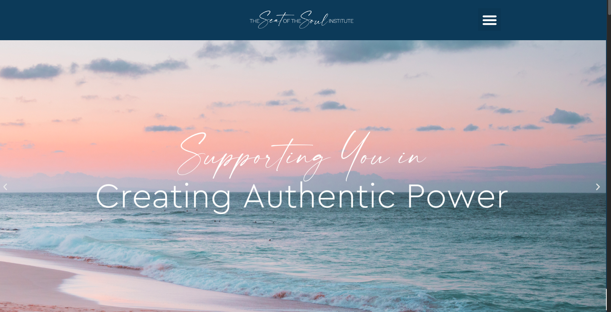
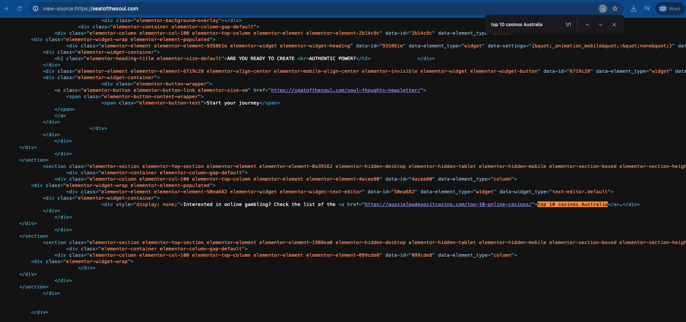
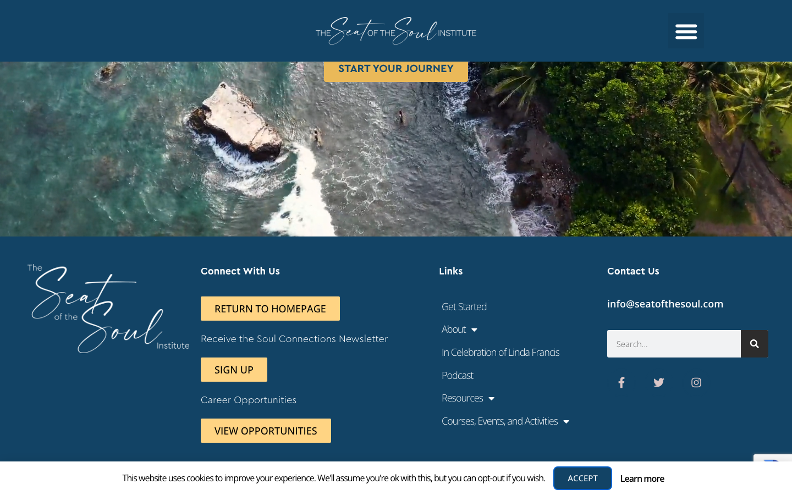

Website Assessment · June 2026
The current site is
holding the brand back.
What's wrong with seatofthesoul.com today — performance, security and search problems found live on the current site, June 2026.
The scoreboard
What the numbers say today
First impression
The message gets lost
- No single, clear value proposition — a rotating carousel mixes spiritual teaching, a live event, AI, and “failing governments.”
- The desktop menu is hidden behind a hamburger icon, even on big screens — an extra click and no overview of the site.
- The logo is hard to read — a small handwritten mark for a broad, multi-generational audience.

Performance
Slow enough to lose visitors
Security & maintenance
WordPress vs. Webflow
| WordPress (current) | Webflow (proposed) | |
|---|---|---|
| Plugins to maintain | 37 with pending updates · several licenses expired | None — features are native |
| Security patching | Manual, ongoing, per-plugin | Automatic (managed platform) |
| Unauthorized changes | Hidden spam link injected in source | No plugin attack surface |
| An update can break the site | High — Elementor compat + a broken dependency | Low (single platform) |
| Hosting · SSL · CDN · backups | Your responsibility | Included & managed |
Unauthorized modification
Hidden SEO spam in the home-page source
Hidden SEO spam detected in the home-page source code. An unauthorized hidden link to an external gambling affiliate website (aussielowdepositcasino.com) was found.
External malware scanners report no active malware — but the WordPress site has been modified without authorization and should undergo a full security review.
view-source:https://seatofthesoul.com/
→ paste in the address bar, then Find (⌘/Ctrl+F) “casino”.

SEO health · 308-page crawl
Hard for search to read
All confirmed on a live 308-page crawl of the current site, June 2026.
The AI-search gap
Invisible to ChatGPT, Perplexity & Google AI
SEO = appear in Google · AEO = be the direct answer · GEO = be cited by AI assistants. The current site was built for the first only.
- No FAQ structured data (confirmed live) — the format AI answers cite most.
- Gary Zukav’s authority isn’t machine-readable — not linked to his Wikipedia/Wikidata entity, so AIs cite third parties.
- No
llms.txt, weak author signals — the exact cues AI models look for to trust a source.
What your analytics say · GA4 · last 12 months
More traffic than ever — holding far less of it
Content sprawl & structure
Large, aging, unmanaged
- 110 pages + 35 unused drafts; 187 posts, 20 already expired.
- Duplicate & year-stamped URLs (e.g.
/blog+/blog-2) split authority. - Hardcoded dates — the footer still reads “© 2025” in 2026.
- Generic funnels — every “Get Started” dumps into one catch-all page.

Bottom line
The cost of staying
- Unauthorized spam injected into the live home-page source — on a plugin-heavy stack that keeps the door open.
- ~18.5-second mobile LCP (Lighthouse) — most phone visitors leave before the content renders.
- 87% of pages with no meta description and 736 images with no alt text — search traffic suppressed.
- Invisible to AI search — no FAQ schema, no entity links, no author signals.
- 110 pages + 187 posts, aging and unmanaged — duplicate URLs and a hardcoded “© 2025”.